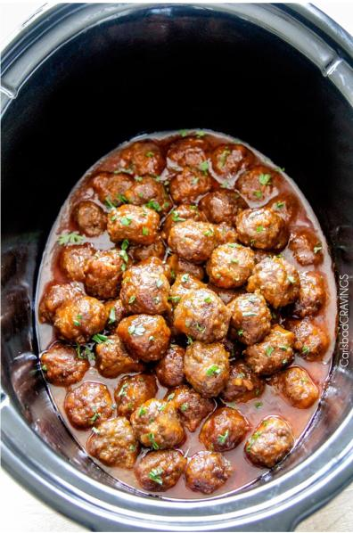

Honey Buffalo Meatballs

Description
A slow cooker recipe for making delicious, honey buffalo meatballs!
Ingredients
Meatballs
- 2 pounds ground beef
- 2 eggs
- 22 saltine crackers, crushed
- 1/3 cup dry, minced onion
- 1/2 cup milk
- 1 tbsp brown sugar
- 1 tsp garlic powder
- 1 tsp onion powder
- 1 tsp chili powder
- 1 tsp salt
- 1/2 tsp smoked paprika
- 1/2 tsp ground cumin
- 1/4 tsp black pepper
Honey Buffalo Sauce
- 1/4 cup Frank's Red Hot Original Sauce, plus more to taste
- 1/4 cup honey
- 1/4 cup apricot preserves
- 1/4 cup brown sugar
- 2 tbsp soy sauce
- 1 1/2 tbsp cornstarch
Steps
- Preheat oven to 450F degrees. Line a rimmed baking sheet with foil. Set aside.
- In a large bowl, add eggs and gently whisk. Add all remaining Meatball Ingredients and mix until well combined. Roll meat mixture into desired meatball size**. Place meatballs onto prepared baking sheet and bake for 8 minutes, or until lightly browned.
- Meanwhile, add all of the Honey Buffalo Sauce Ingredients to a medium bowl and whisk to combine (only use ¼ cup
hot sauce at this point. You can add more hot sauce to taste at the end of cooking).
- Line the bottom of your slow cooker with meatballs, drizzle with some Honey Buffalo Sauce, then remaining meatballs
followed by the remaining Sauce.
- Cover and cook on low heat for 2 hours, gently stirring an hour after cooking. When done, taste and stir in additional hot wings sauce.